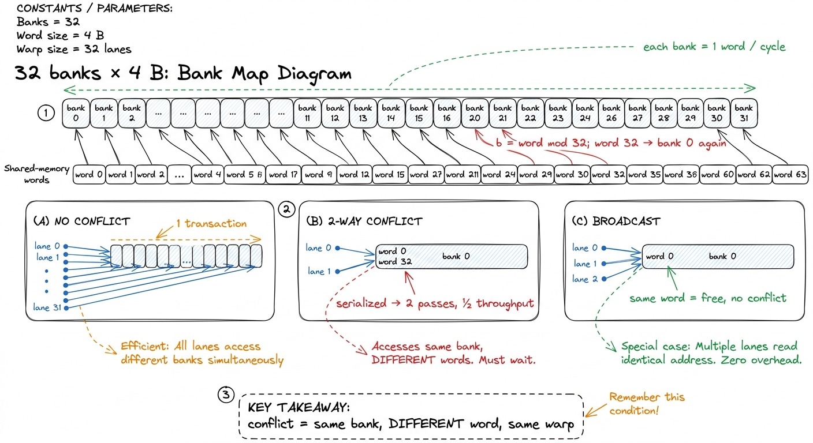
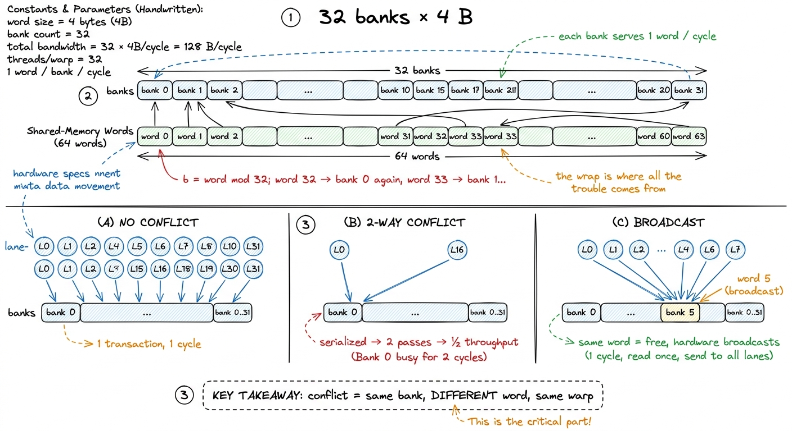
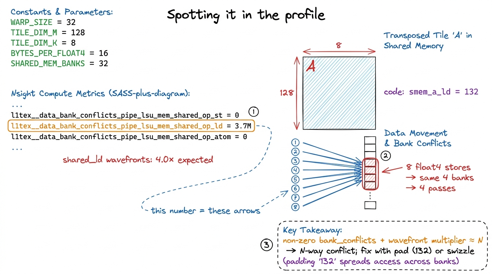

Shared-memory bank conflicts SMEM
Shared memory is the fastest addressable memory you get on a GPU — a scratchpad that lives on the SM itself, an order of magnitude lower latency than global memory. But "fast" here hides a catch that trips up almost every first tiled kernel, and it tripped up mine: shared memory is not one flat pool. It is physically sliced into 32 banks, and if the 32 threads of a warp ask for the wrong 32 addresses, the hardware quietly serializes what I thought was a single-cycle read. My kernel was correct, my occupancy was fine, and I was running at a third of the speed I expected. This article is about how I learned to see that, and fix it with a +1.
The 32 banks
Shared memory on Hopper is addressed as an array of 32-bit words, and consecutive words are handed out to consecutive banks — bank b owns word w when b = w mod 32. Word 0 is in bank 0, word 1 in bank 1, … word 31 in bank 31, word 32 wraps back to bank 0, and so on. Each bank can service one 32-bit word per cycle. So a warp of 32 lanes, each reading one 4-byte word, is exactly matched to the hardware: if those 32 words land in 32 distinct banks, the whole warp's request is satisfied in a single transaction. That is the design point.1 The 32-banks-of-4-bytes geometry has been stable since Fermi and is unchanged on Hopper. There is an old configurable-bank-width knob (cudaSharedMemBankSizeEightByte) from Kepler, but on modern architectures you should assume 4-byte banks and design for them.
A bank conflict is what happens when two or more lanes in the same warp address different words that live in the same bank. The bank can only emit one word per cycle, so the hardware splits the request into as many transactions as it needs and replays the load. An n-way conflict — n lanes hitting one bank on different words — takes n passes and costs you a factor of n in shared-memory throughput. The worst case, all 32 lanes hitting one bank on 32 different words, is a 32-way conflict: a single warp instruction turned into 32 serialized ones.
Two exceptions matter, because they are the escape hatches you will lean on later:
- Conflicts are per-warp, and per-transaction. Only lanes within the same warp can conflict; threads in different warps never conflict with each other because they issue separately.2 More precisely the check happens per memory transaction, not per instruction — a 128-bit vectorized load is broken into sub-transactions and each is checked independently. This is why
float4accesses have their own conflict story, covered below. - Same-word access is free. If multiple lanes read the exact same word (same bank and same offset), there is no conflict — the hardware broadcasts it. This is the entire reason a well-laid-out tile can feed a whole warp the same
Bvalue without penalty.

figure rendering · The bank map. A warp reads at full speed only when its 32 lanes touchA worked example: the transpose
The cleanest place to see a conflict is a shared-memory transpose, because transposition is precisely the operation that swaps a benign row access for a malicious column access. Suppose we stage a 32 × 32 tile of floats in shared memory, one word per element, row-major:
__shared__ float tile[32][32];
// each thread loads one element from global into the tile
tile[threadIdx.y][threadIdx.x] = in[...];
__syncthreads();
// now write it out transposed
out[...] = tile[threadIdx.x][threadIdx.y]; // <-- column readWalk the write. A warp here is 32 threads with a fixed threadIdx.y and threadIdx.x running 0..31. On the load, lane i writes tile[y][i] — 32 consecutive words, 32 distinct banks, perfect. On the transposed read, lane i reads tile[i][y]. Those addresses are i * 32 + y words apart, so as i runs 0..31 the bank index is (i * 32 + y) mod 32 = y for every single lane. All 32 lanes hit bank y, on 32 different words. That is a full 32-way bank conflict — the read is replayed 32 times.3 ncu names this directly: l1tex__data_bank_conflicts_pipe_lsu_mem_shared_op_ld (and the _st variant for stores). A non-zero value here on a kernel that "should" be shared-bound is almost always your problem. The Nsight "Memory Workload Analysis" section will also flag it as a wavefront multiplier.
The fix is one character. Pad the inner dimension by a single element so each row is 33 words wide instead of 32:
__shared__ float tile[32][33]; // <-- the +1Now element tile[i][y] sits at word i * 33 + y, and the bank is (i * 33 + y) mod 32 = (i + y) mod 32. As i runs 0..31, that expression sweeps through all 32 banks exactly once. The 32-way conflict collapses to zero. The padding column is never read or written — it exists purely to shear the address arithmetic so that a stride of 32 (which aliases to bank 0) becomes a stride of 33 (which is coprime to 32 and therefore visits every bank). One wasted word per row, a 32× throughput win on that access.

figure rendering · The padding fix. Widening each row from 32 to 33 words changes the colPadding versus swizzling
Padding is the blunt instrument, and for most tiled kernels it is the right one: cheap, obvious, and it costs only a sliver of your shared-memory budget. But it has two real downsides. First, it wastes shared memory — with up to 228 KiB usable as SMEM per SM and every kernel fighting for occupancy, a padded 128 × 128 tile can push you over an occupancy cliff. Second, and more seriously, padding is incompatible with the tensor-core load instructions, which we'll get to — they demand specific, contiguous 128-byte layouts and will not tolerate a stray +1.
The alternative is swizzling: instead of adding a column, you permute the logical-to-physical address mapping with an XOR so that conflicting accesses scatter across banks without changing the tile's size. The canonical form is
// map logical (row, col) to a swizzled physical column
int phys_col = col ^ ((row * stride / bank_bytes) & mask);The XOR is chosen so that the rows which used to collide on one bank now each get a different rotation of the bank assignment. Because XOR is a bijection, no two logical elements ever collide in physical space, and because it changes no sizes, the tile stays a clean power-of-two — exactly what the tensor-core loaders need. The cost is that the store and the load must apply the same swizzle, so the arithmetic shows up in two places and is easy to get subtly wrong. This is why libraries like CUTLASS express layouts as composable functions rather than raw indices: the swizzle is part of the layout, not something you sprinkle on by hand.4 Simon Boehm, whose GEMM ladder we follow, explicitly skips the bank-conflict kernels — he found that eliminating them left his kernel slower overall, because the padding hurt occupancy more than the conflicts hurt throughput. That is the honest lesson: a bank conflict is only worth fixing if shared memory is actually on your critical path. Profile first.
How it shows up in the GEMM
In the GEMM ladder, bank conflicts arrive the moment we start staging tiles — kernel 3, the shared-memory version, and they get sharper with every optimization after it. The classic trigger is the transposed load of A. To make the inner product's reads of A contiguous, most fast kernels transpose the A tile as they stage it into shared memory. That transposed store is exactly the column access from the section above: without care, a warp storing A lands all its lanes in a handful of banks and serializes.
It gets worse with vectorization. Once we load with float4 — the win that carries kernel 6 from 68.7% to 78.4% of cuBLAS — each thread moves 16 bytes, i.e. four consecutive banks, in one transaction. If eight adjacent threads each issue a float4 to the same four columns of a 128 × 8 tile, they pile onto the same four banks, and the store fans out into four serialized 128-byte transactions. Salykova's tiled kernel fixes precisely this by padding the leading dimension of the staged, transposed A block from 128 to 132 floats:
const int smem_a_ld = 132; // 128 + 4, pads the transposed A tileThe +4 (16 bytes, one float4) is the vectorized analogue of the scalar +1: it offsets each row by one vector so that the eight threads which used to collide now walk across all 32 banks. The B tile, by contrast, needs no padding — its 128 × 8 layout is already a power of two whose natural stride spreads a warp across 32 distinct banks. That asymmetry is typical: you pad the operand you transpose, and leave the other alone.
The payoff is real but modest, and it is easy to over-invest here. On the ladder, cleaning up shared-memory access is one contributor among several — coalescing, register tiling, vectorization, and warptiling — that together take us from the naive 1.3% of cuBLAS up to 93.7%. A bank conflict that costs you a 2-way serialization on an access that is not your bottleneck buys you nothing; the same conflict on the inner-loop read of a compute-bound kernel is the difference between 80% and 90% of peak. Predict, then profile: check l1tex__data_bank_conflicts_* before you spend a day on it.

figure rendering · Reading the evidence. The conflict metric and the wavefront multiplierThe tensor-core wrinkle
The reason swizzling exists at all — and the reason padding eventually stops working — is the Hopper tensor-core path. The warpgroup matrix instruction wgmma and the shared-memory-to-register loader ldmatrix do not read shared memory the way a scalar thread does. They consume it in fixed 128-byte-wide fragments with a hardwired lane-to-address mapping, and that mapping is itself prone to bank conflicts on a naive row-major tile. You cannot pad your way out, because wgmma expects the operand tile to match one of a small set of swizzle modes (32-, 64-, or 128-byte) baked into its descriptor — a stray padding column would break the 128-byte alignment the instruction assumes.5 This is why the tensor-core kernels look so different from the CUDA-core ones: the shared-memory layout is no longer your free choice. You pick one of the hardware's swizzle modes, lay the tile out to match, and describe it to wgmma in a matrix descriptor. On Blackwell's tcgen05 path the operands move through Tensor Memory (TMEM) instead, which changes the conflict story again — a topic for its own article.
So the arc is: scalar kernels get bank conflicts and fix them with +1; vectorized kernels get them worse and fix them with +4; and tensor-core kernels can't pad at all, so they adopt the hardware's own XOR-swizzle modes and describe the layout to the instruction. The underlying invariant never changes — 32 lanes, 32 banks, one word each — but as the loads get wider and the math units get hungrier, the cost of getting the mapping wrong climbs from a nuisance to the whole ballgame.
Next we put the shared-memory tile under the microscope properly, and profile the exact GEMM kernel where these conflicts first cost us measurable throughput — the point where "it's correct and it's slow" finally becomes "it's correct, it's fast, and I can prove why."